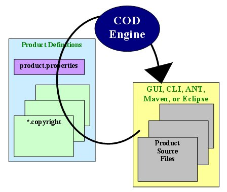
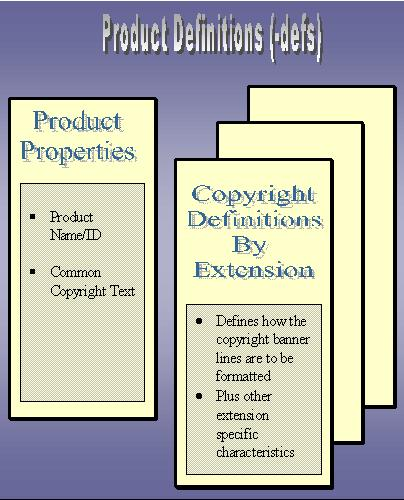
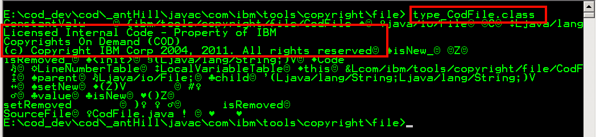

User's
Guide |  | Version
4.0.0b Last Updated
06/24/2011 |
The COD tool assists product teams in complying with the
requirements of IBM Corporate Standard C-S 0-6045-002
by automating the maintenance
of the copyright banners within its source parts.
How does COD work?
The Big Picture
COD examines a set of product source files. Based
on a file's extension, the appropriate product defined copyright content rules
are applied and the file is re-written.

Anatomy of a Source Part
COD views each source part as being composed of these areas:
File |
|
Notes |
<ext>.copyright Property |
product.properties Property |
[ Head ] |
|
Optional; varies by type of file |
Read: head.# |
|
B
a
n
n
e
r |
[ Top "Marker" ] |
|
Optional |
Write: top-line if
banner is added or the migrate option
is used
|
Read: tag.top |
[ Copyright Content ]
|
|
Write: text.# in
all cases |
|
| [ End "Marker" ] |
|
Write: end-line if
banner is added or the migrate option
is used |
Read: tag.end |
Body
|
|
|
|
|
Imbedded Copyright Information
COD uses a set of dedicated tags
to locate the start/end of the imbedded copyright information in a source
part. For simplicity, the same tags are used for every file extension.
This makes the fuzzy guess work of where copyright banners are located a thing
of the past. The downside is that development must be made aware of this process.
The tool will automatically insert a banner if one is not detected.
Therefore, a common approach to starting a new project with COD is to remove
all copyright banners from current source files and let the tool add them.
The following is a snippet of a Java file that shows its
existing copyright banner (in bold).
/*********************************************************** {COPYRIGHT-TOP} ***
* IBM Confidential
*
* Copyrights On Demand (COD)
*
* (C) Copyright IBM Corp. 1999, 2004
************************************************************ {COPYRIGHT-END} **/
import java.awt.*;
import javax.swing.*;
public class HelloWorld
{
...
Notice that the copyright banner is:
- delimited by the lines containing {COPYRIGHT-TOP} and
{COPYRIGHT-END} regardless of what ever text is on the same
line.
- The COD tool use these tags to locate and extract
existing copyright information (see the next section)
- contained within a proper Java comment
Determination of the "Year 1" Copyright Date
When existing copyright banner lines are detected, they are scanned to extract
relevant copyright date information for inclusion in the updated file
- The current copyright date(s) are found by located the line that contains
both "(c)"
and "copyright"
- The entire line is parsed into tokens
(delimited by a space, comma, hyphen, and period)
- The numeric token found with the lowest value is remembered as
the "Year 1" date. Mistakes in ordering are simply"absorbed"...
Examples of Determining the "Year 1" Copyright Date
| Existing Copyright Date(s) |
"Year 1" |
| 2002 |
2002 (duh!) |
| 2000,2002 |
2000 |
| 2000, 2001, 2002, 2003 |
2000 |
| 2003, 2001 |
2001 |
| 2001-2004 |
2001 |
Generation of the Copyright Dates
The copyright date(s) is inserted into the text.# line
that contains "<COPYRIGHT DATE>".
It's formatting is defined by Section 7.2 of the Corporate Standard
and may be controlled using the cod.format property [since 4.0]
The optional cod.exclude property [since 4.0]
allows one or more years to be automatically excluded before the
the formatting occurs.
This can be useful for development projects that
span multiple years (say 2010 and 2011) and some source parts have
already been updated with a copyright year of 2010.
By excluding 2010 you can:
- enforce the use of just
2011; important if all copyright years are being used
- ensure that new parts correctly use just
2011 instead of 2010, 2011
As an optimization, if the resulting copyright date(s) are the same as what was
in the original file, the file is not re-written.
Defining Product Specific Information to COD
COD uses product specific information to tailor how its operates so that it
can meet the needs of any product. This is important since products vary
in their security classification and the types of source files they use. All of
this information is placed into a single directory that is then specified when
COD is run.

Product Specific Properties
COD reads the product.properties file
to obtain all of the product specific information it requires.
COD ships defs/product.properties as an
example. It defines:
- A set of COD operational controls
- All of the insert values that
may be used in a copyright definitions file. Many of these text strings are
defined by C-S 0-6045-002.
This simplifies a product's effort by having all possible required text
strings ready for use as they customize the
copyright definitions files.
################################################################################
# The following values provide additional control over COD's operation
################################################################################
###########################################################
# Character that indicates "leading whitespace " in the
# values read from a copyright definition file.
# COD will automatically convert to a space.
#
# Note: this is because leading whitespace is automatically
# trimmed by Java when a .properties file is loaded
# (see Properties.load() javadoc for full details)
#
# Default: ^
###########################################################
cod.leading = ^
##########################################################
# Boolean that controls if COD automatically migrates the
# Top/End Banner Lines
#
# Default: false
###########################################################
cod.migrate = false
###########################################################
# Controls how COD formats copyright date(s)
#
# Values: all.........format all defined copyright date(s)
# 2001 | 2001, 2011 | 2001, 2002, 2011 | 2001, 2002, 2009, 2011
#
# firstLast...format just first and last copyright date(s)
# 2001 | 2001, 2011
#
# Default: firstLast
###########################################################
cod.format = firstLast
###########################################################
# Defines year(s) that should be excluded from the
# final formatted copyright date(s)
#
# Values: one or more years; blank or comma separated
# 2001 | 2001 2011 | 2001, 2002, 2011 | 2001, 2002, 2009, 2011
#
# Default: no years are automatically excluded
###########################################################
cod.exclude = 2010
################################################################################
# The following values are automatically inserted into various lines
# of each *.copyright file.
#
# - The current product information is inserted by specifying {product}
################################################################################
/\/\/\/\/\/\/\/\/\/\/\/\/\/\/\/\/\/\/\/\/\/\/\/\/\/\/\/\/\/\/\/\/\/\/\/\/\/\/\/
# These values MUST be updated for your product
#/\/\/\/\/\/\/\/\/\/\/\/\/\/\/\/\/\/\/\/\/\/\/\/\/\/\/\/\/\/\/\/\/\/\/\/\/\/\/\/
###########################################################
# Your product's name/PID/etc for every copyright banner.
###########################################################
product =***Your Product***
#/\/\/\/\/\/\/\/\/\/\/\/\/\/\/\/\/\/\/\/\/\/\/\/\/\/\/\/\/\/\/\/\/\/\/\/\/\/\/\/
# These values are usually NOT updated for your product
#/\/\/\/\/\/\/\/\/\/\/\/\/\/\/\/\/\/\/\/\/\/\/\/\/\/\/\/\/\/\/\/\/\/\/\/\/\/\/\/
###########################################################
# Define the various security levels
###########################################################
security.conf =IBM Confidential
###########################################################
# Define the various categories of material
###########################################################
category.internal =Licensed Internal Code - Property of IBM
category.licensed =Licensed Materials - Property of IBM
category.oco =OCO Source Materials
###########################################################
# Additional "Licensed Source Material" Legend
###########################################################
licensed.rm ="Restricted Materials of IBM"
###########################################################
# Copyright Notice Template
#
# - <COPYRIGHT DATE> indicates where COD should insert the
# appropriate copyright year(s)
#
# Reference: C-S 0-6045-002 Section 7.2
###########################################################
copyright =(C) Copyright IBM Corp. <COPYRIGHT DATE>
###########################################################
# Additional Copyright Qualifier
###########################################################
all.rights =All Rights Reserved.
###########################################################
# Reference: C-S 0-6045-002 Section 7.4
###########################################################
oco.trade.secret.1 =The source code for this program is not published or otherwise
oco.trade.secret.2 =divested of its trade secrets, irrespective of what has been
oco.trade.secret.3 =deposited with the U.S. Copyright Office.
###########################################################
# Reference: C-S 0-6045-002 Section 7.9
###########################################################
us.gov.1 =US Government Users Restricted Rights - Use, duplication, or
us.gov.2 =disclosure restricted by GSA ADP Schedule Contract with IBM Corp.
################################################################################
# The "unique" text that indicates to COD the top of the copyright banner lines.
#
# - it is used when scanning a file's contents to determine if it already
# contains a set of banner lines.
# - when a set of copyright banner lines is added to a file, this value is
# automatically inserted into the file type's TOPLINE definition
################################################################################
tag.top ={COPYRIGHT-TOP}
################################################################################
# The "unique" text that indicates to COD the end of the copyright banner lines.
#
# - it is used when scanning a file's contents to locate the end of the set
# of banner lines started by "tag.top"
#
# - when a set of copyright banner lines is added to a file, this value is
# automatically inserted into the file type's ENDLINE definition
################################################################################
tag.end ={COPYRIGHT-END}
|
Product Specific Copyright Banner Definitions
When a file is processed, COD uses its extension (.java,
.xml, etc) to locate the appropriate copyright definitions file
- If one is found, it's content defines how to format the copyright banner
in a manner that will not affect the source part (i.e. a Java file will still
compile without errors, scripts will still run, etc).
- If one is not found, then that file
is simply ignored (i.e. not processed/updated)
COD ships a set of example definition files: defs/*.copyright.
Each product must analyze and customize these files
to meet their unique copyright requirements according to the Corporate Standard.
Each definitions file is a standard Java Properties file
with the following format:
# This is a comment line
<property name> =<property value>
The following
shows what a java.copyright definition file
looks like:
top-line=/********************************************************* {tag.top} ***
text.1 =* {security.conf}
text.2 =* {category.oco}
text.3 =* {product}
text.4 =*
text.5 =* {copyright}
text.6 =*
text.7 =* {oco.trade.secret.1}
text.8 =* {oco.trade.secret.2}
text.9 =* {oco.trade.secret.3}
end-line=********************************************************** {tag.end} **/
|
Items such as {tag.top} indicate where product.properties values are to be inserted
The top-line and end-line properties
define the lines to be used for these situations:
- when a copyright banner does NOT already exist in the file
- when a copyright banner DOES exist in the file and the migrate option
has been enabled
- They must work together and with the text properties
to generate a set of lines that are treated as comments by whatever tool
may
process the file.
- These are file type specific.
- Above, when all properties are added the result is a multi-line Java comment
block.
- An alternative would have been to format top-line, text.#,
and end-line using
Java's single line comment indicator: (i.e.
text.1 = // {security.conf} )
- Existing top/end lines can optionally be migrated
The text properties
defines the copyright banner content for this file type.
- It is specified as an array of lines using consecutive index values (1..n).
Do not leave any gaps!
- If the file's type does not support "block" comments, then every
text line must be started by the appropriate
comment indicator
- The remainder of the line can should then contain indicators where one or
more product.properties values should be inserted to
create the appropriate text.
- For example, place {copyright} where you want
the standard copyright notice to be placed.
- Existing banner text is always completely replaced by these values.
- If a banner is added to the file, they are placed between the top-line
and end-line properties.
- Support has been added to allow the use of leading
blanks
Since the anatomy of some files require that certain
text appear before the copyright banner, the head.# properties
(where the # represents a number like the text property
above) are used to define these line(s). The following shows what a copyright
definition for an XML file would use:
HEAD.1 =<?xml
The head.1 property
tells COD that the banner lines must be added after the <?xml.line
as required by the XML standard.
It is quite common that the copyright banner is the
same for multiple file extensions. The use-for property
defines the other file extension(s) that this definition should
also be
used for.
For instance, the html.copyright definitions could include
this property so that .htm files also use the same banner definition.
use-for=htm
The format is: use-for = ext [ <sep> ext <sep> ext ...
]
where:
- ext is a file extension such as java or cmd; do not include a period
- <sep> can be a blank or comma
These default *.copyright files contain a use-for property:
| Definition File |
use-for Definition |
Since |
| bat.copyright |
cmd |
|
| html.copyright |
htm |
|
| pl.copyright |
pm |
|
| xml.copyright |
dtd, xsd, xsl |
|
How do I use the COD tool?
The COD tool is run as an ANT task.
The complementary
rtc-changes task allows you to process the
files that have been changed in your RTC repository [since 4.0].
Using COD with Your Product
For COD to update your source parts in a manner that's
proper for your product's classification, you must tweak the COD
provided definition files. Here's how.
Create Your Own Set of Definition Files
-
Create a new directory, say codDefs,
- Tip Its recommended to place this directory
somewhere in your product's source tree so that it can be persisted in
a source control system (CMVC, CVS, etc) for use next release
- Copy the entire contents of one of the following directories to codDefs.
Choose the one that most closely matches the file types contained in your
product
- <install root>/defs
- <install root>/product-samples/COD
- <install root>/product-samples/Xxxx
Edit codDefs/product.properties
- change the value of the product property to the appropriate
value for your product. this would be your product name, PID, etc
Update Your Copyright Definitions
- Review
IBM Corporate Standard C-S 0-6045-002
and determine the format of the copyright banner you'll need
for each type of file.
- Refer to Appendix A. Sample Proprietary Statements
for guidance.
- Update each codDefs/*.copyright file based on your requirements
- Use the appropriate product.properties inserts
- Add/insert/delete text line(s) if necessary but
remember to keep the index numbers in sequential consecutive order
- Use the use-for property if there are multiple
file types that can share the same copyright banner
- For each file extension xxx that COD has not been
provided a xxx.copyright file
- create codDefs/xxx.copyright
- define the appropriate copyright text, top/end lines, and head line(s)
[if necessary]
- if xxx is a common file type, then consider
contributing your xxx.copyright file back to the
COD project :-)
Running COD
Create an Ant build script with the appropriate <CODgt; task(s).
Its <fileset> element(s) provides the most
flexible means of locating the files to be processed.
Test Your Definition Files in a "Sandbox"
Getting the copyright information just right is often an iterative process,
so its recommended to let CODprocess a "sandbox"
copy of your source parts as tweak your *.copyright definitions.
Be sure to verify both of this scenarios:
-
Files already contain a copyright banner
- were they correctly updated?
-
Files missing a copyright banner
-
were they correctly added?
- were they added according to any head.# specification?
Final Run
After you are satisfied that your work
in the "sandbox" is 100% correct:
-
Make a backup of your "master" source tree
>Run CODagainst the "master" source tree
- Check-in the final codDefs files into your source
control system
- Take that needed vacation...
Top
Managing Copyright Information in .class Files
The purpose of COD is to manage the copyright information
contained in your source parts and/or shipped samples/text files.
IBM Corporate Standard C-S 0-6045-002
also defines the requirement to place proprietary statements
in the products object code. For Java based products this means the generated
.class file.
COD has been modified to demonstrate one technique for doing this.
The "Master" COPYRIGHT Text
The Info.java file contains
the master copyright
text. This provides a single point of maintenance. All other Java source
files reference this constant.
public final static String COPYRIGHT =
"Licensed Materials-Property of IBM"
+ "\nCopyrights On Demand"
+ "\n(C)Copyright IBM Corp 2004,2005"
+ "\nAll rights reserved"
+ "\nUS Govt Users Restricted Rights-"
+ "Use,duplication,or disclosure restricted by GSA ADP Schedule Contract
w/IBM Corp";
|
The ANT build script (build.xml) actually generates the Info.java
file. One of the reason is so that the ending copyright date (2005)
can be automatically maintained.
Referencing the "Master" COPYRIGHT Text
All other Java source files simply reference the master copyright
text. By using a package qualified reference, an import statement does not
have to be added to any .java file.
/*****************************************************************************
* This will imbed required copyright text into generated .class file.
*
* Note: 'C' used as field name just to reduce # bytes added to .class
*****************************************************************************/
@SuppressWarnings( "unused" )
private static final String C = com.ibm.tools.copyright.Info.COPYRIGHT;
|
Top
Verifying the .class File
You can verify that a .class file contains copyright information by simply
typing the file from a command prompt:

Installation Structure
The directory structure is created when you unzip the COD
installation ZIP file:
<COD install root>
|
+-- defs
|
+-- doc
|
+-- lib
|
+-- product-samples
| |
| +-- COD
| +-- xxx
|
+-- test
|
+-- xxx
|
Directory |
Contents |
| defs |
- Default product.properties
file
- Default *.copyright definition
files
|
| doc |
All of the COD documentation
|
| lib |
The COD code JAR file:
cod.jar
It also contains the
definitions
of the COD ANT tasks.
|
| product-samples |
This directory contains a variety of product samples.
|
| product-samples\COD |
This directory contains the files used to run COD
against its own source |
| test |
This directory contains Ant-based unit tests for
the COD tasks.
- Studying the test case XML files can provide insight/ideas for your
own use of these tasks.
- Subdirectories contain sets of test data for various test scenarios.
|
 | | v4.0.0b - 06/24/2011 |